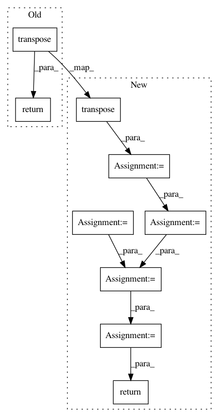

aef7a9545116de63a66493c97836f9ea7784f5fd,geomstats/stiefel.py,Stiefel,random_uniform,#Stiefel#Any#,60
Before Change
St(n,p) := Z(Z^TZ)^{-1/2}
Z = gs.random.normal(shape=(n_samples, self.n, self.p))
return gs.matmul(Z, gs.linalg.inv(
matrix_f(gs.matmul(gs.transpose(Z, axes=(0, 2, 1)), Z), gs.sqrt)))
class StiefelMetric(RiemannianMetric):
After Change
St(n,p) := Z(Z^TZ)^{-1/2}
std_normal = gs.random.normal(shape=(n_samples, self.n, self.p))
std_normal_transpose = gs.transpose(std_normal, axes=(0, 2, 1))
aux = gs.matmul(std_normal_transpose, std_normal)
matrix_space = MatrixSpace(self.p, self.p)
sqrt_aux = matrix_space.sqrtm(aux)
inv_sqrt_aux = gs.linalg.inv(sqrt_aux)
return gs.matmul(std_normal, inv_sqrt_aux)
In pattern: SUPERPATTERN
Frequency: 3
Non-data size: 9
Instances
Project Name: geomstats/geomstats
Commit Name: aef7a9545116de63a66493c97836f9ea7784f5fd
Time: 2018-11-20
Author: ninamio78@gmail.com
File Name: geomstats/stiefel.py
Class Name: Stiefel
Method Name: random_uniform
Project Name: facebookresearch/Horizon
Commit Name: 247203f29b7e841204c76d922c1ea5b2680c3663
Time: 2020-12-08
Author: czxttkl@fb.com
File Name: reagent/models/seq2slate.py
Class Name: DecoderPyTorch
Method Name: forward
Project Name: geomstats/geomstats
Commit Name: eb0904f011ed319a32f48134b9cf63f17d8bbe17
Time: 2018-11-21
Author: ninamio78@gmail.com
File Name: geomstats/stiefel.py
Class Name: Stiefel
Method Name: random_uniform